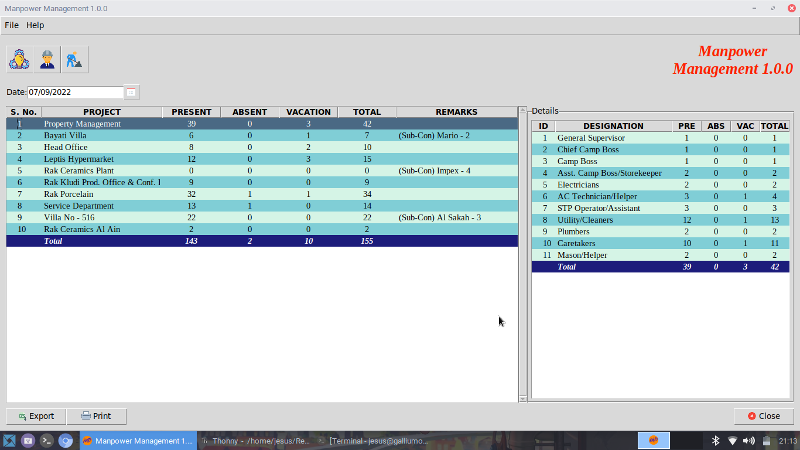
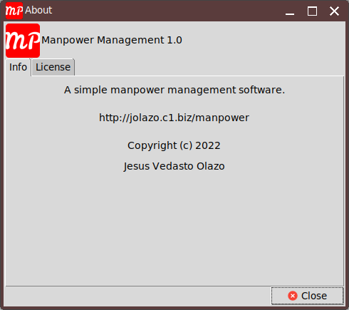
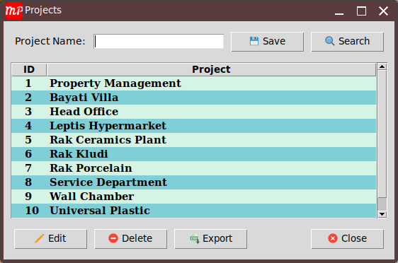
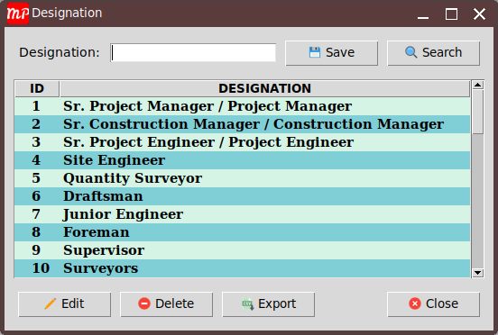
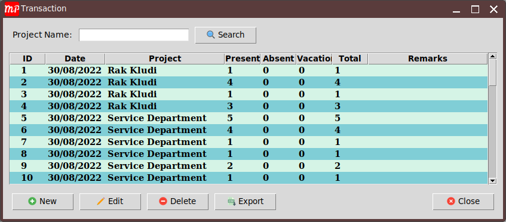
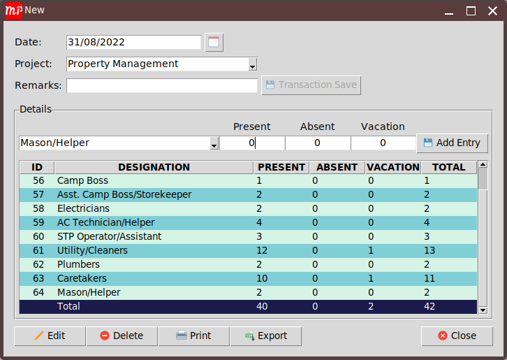

A simple manpower management software. It is used to track down manpower, print report for submission, and can export to excel too if needed.
I was using excel to track down and submit the report for manpower up until recently. The problem with excel files is that the more sheets you use the slower it become. If you decide to use diffirent excel files it will be difficult to track down old reports and quite difficult to search unlike this software you just need to select the date and the system itself will carry on the searching for you. Hence this software.
This software is now possible to use but some of the options are still under construction but most of the basic requirements are already met so using it in everyday will be okay. I was thinking of adding a dashboard option just to show how are the status of the manpower divided and been utilized for different projects.
There is no particular coding style that has been used in this project just the basic stuffs.






Below are the frameworks used in this software.
This is where you write what all extra features have been done in your project. Basically this is where you try to make your project stand out from the rest.
This is where you try to compress your project and make the reader understand what it does as simply as possible. This should help the reader understand if your code solves their issue.
There is no need to install the software. Place it where you are ussually saving your files for example in the Desktop folder. Database will be created under your user directory in .manpower_mngt folder just incase you needed to back it up for security purposes.
To be honest, I don't know much about testing. Hence can't really add here the test I made as I do not have one. If one of you can teach me how to test graphical user interface testing feel free to contact me. I am open to anything.
As I have mentioned before, you never know who is going to read your readme. So it is better to provide information on how to use your project. A step-by-step guide is best suited for this purpose. It is better to explain steps as detailed as possible because it might be a beginner who is reading it.
This is where you let them know that they can contribute and help you out. A guideline on how to contribute is also helpful
Giving proper credit is most important. Mention any links/repos which helped you or inspired you to build this project. It can be a blog, another open source project, or just people who have contributed in building this project.
MIT License